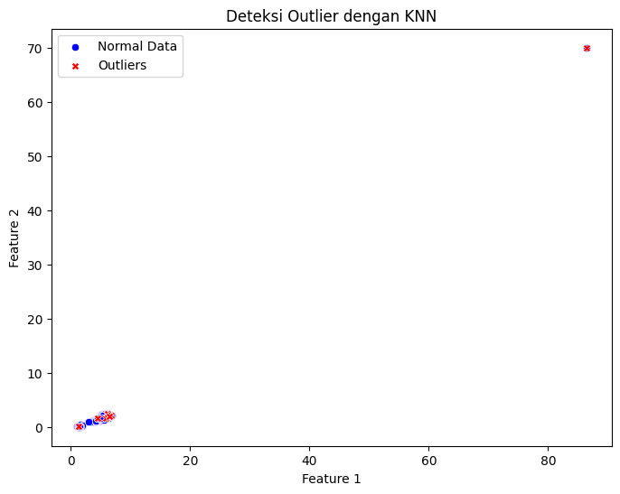
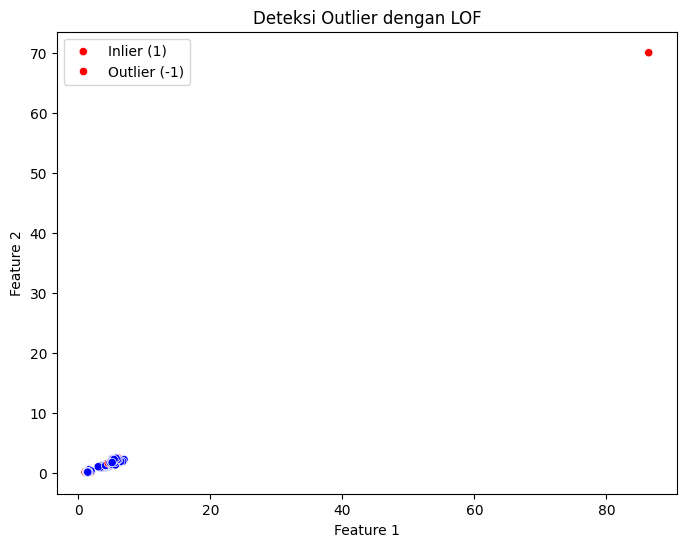

Deteksi outlier pada data iris#
Pengumpulan Data#
Dataset IRIS adalah Dataset ini berisi informasi tentang tiga spesies bunga Iris (Setosa, Versicolor, Virginica), dengan empat fitur utama: panjang dan lebar sepal serta panjang dan lebar petal.
Lokasi Data#
Data IRIS yang digunakan berada dalam cloud data platform aiven dan Dbeaver untuk kelola database :
Data IRIS petal berada di database MySQL.
Data IRIS sepal berada di database PostgreSQL.
Metode Pengumpulan Data#
Langkah pengumpulan data dilakukan dengan Python menggunakan pustaka berikut:
pymysql → Untuk menghubungkan dan mengambil data dari MySQL.
pandas → Untuk membaca dan mengolah data setelah diambil dari database.
psycopg2-binary → Untuk menghubungkan dan mengambil data dari PostgreSQL.
sqlalchemy → Untuk membuat koneksi database yang lebih stabil dan kompatibel dengan
pandas.read_sql().python-dotenv → Untuk menyimpan kredensial database dalam file
.envagar lebih aman dan tidak perlu hardcoding dalam kode Python.
Cara Mengumpulkan Data#
1. Menghubungkan ke MySQL dan PostgreSQL#
Install library python yang diperlukan
!pip install pymysql
!pip install pandas
!pip install psycopg2-binary
!pip install sqlalchemy
!pip install python-dotenv
Requirement already satisfied: pymysql in /usr/local/python/3.12.1/lib/python3.12/site-packages (1.1.1)
[notice] A new release of pip is available: 24.3.1 -> 25.1.1
[notice] To update, run: python3 -m pip install --upgrade pip
Requirement already satisfied: pandas in /home/codespace/.local/lib/python3.12/site-packages (2.2.3)
Requirement already satisfied: numpy>=1.26.0 in /home/codespace/.local/lib/python3.12/site-packages (from pandas) (2.2.0)
Requirement already satisfied: python-dateutil>=2.8.2 in /home/codespace/.local/lib/python3.12/site-packages (from pandas) (2.9.0.post0)
Requirement already satisfied: pytz>=2020.1 in /home/codespace/.local/lib/python3.12/site-packages (from pandas) (2024.2)
Requirement already satisfied: tzdata>=2022.7 in /home/codespace/.local/lib/python3.12/site-packages (from pandas) (2024.2)
Requirement already satisfied: six>=1.5 in /home/codespace/.local/lib/python3.12/site-packages (from python-dateutil>=2.8.2->pandas) (1.17.0)
[notice] A new release of pip is available: 24.3.1 -> 25.1.1
[notice] To update, run: python3 -m pip install --upgrade pip
Requirement already satisfied: psycopg2-binary in /usr/local/python/3.12.1/lib/python3.12/site-packages (2.9.10)
[notice] A new release of pip is available: 24.3.1 -> 25.1.1
[notice] To update, run: python3 -m pip install --upgrade pip
Requirement already satisfied: sqlalchemy in /usr/local/python/3.12.1/lib/python3.12/site-packages (2.0.38)
Requirement already satisfied: greenlet!=0.4.17 in /usr/local/python/3.12.1/lib/python3.12/site-packages (from sqlalchemy) (3.1.1)
Requirement already satisfied: typing-extensions>=4.6.0 in /home/codespace/.local/lib/python3.12/site-packages (from sqlalchemy) (4.12.2)
[notice] A new release of pip is available: 24.3.1 -> 25.1.1
[notice] To update, run: python3 -m pip install --upgrade pip
Requirement already satisfied: python-dotenv in /usr/local/python/3.12.1/lib/python3.12/site-packages (1.0.1)
[notice] A new release of pip is available: 24.3.1 -> 25.1.1
[notice] To update, run: python3 -m pip install --upgrade pip
buat file env untuk koneksi database di aiven anda.
Sesuaikan seperti format dibawah ini:
# Database MySQL
MYSQL_HOST=<HOSTNAME>
MYSQL_USER=<USERNAME>
MYSQL_PASSWORD=<PASSWORD>
MYSQL_PORT=<PORT>
MYSQL_DATABASE=<DATABASE_NAME>
# Database PostgreSQL
PG_HOST=<HOSTNAME>
PG_USER=<USERNAME>
PG_PASSWORD=<PASSWORD>
PG_PORT=<PORT>
PG_DATABASE=<DATABASE_NAME>
Upload env:
from google.colab import files
uploaded = files.upload()
---------------------------------------------------------------------------
ModuleNotFoundError Traceback (most recent call last)
Cell In[2], line 1
----> 1 from google.colab import files
2 uploaded = files.upload()
ModuleNotFoundError: No module named 'google'
koneksikan database di aiven
import pandas as pd
from sqlalchemy import create_engine
import os
from dotenv import load_dotenv
load_dotenv()
# Ambil variabel koneksi dari lingkungan
MYSQL_HOST = os.getenv("MYSQL_HOST")
MYSQL_PORT = os.getenv("MYSQL_PORT")
MYSQL_USER = os.getenv("MYSQL_USER")
MYSQL_PASSWORD = os.getenv("MYSQL_PASSWORD")
MYSQL_DATABASE = os.getenv("MYSQL_DATABASE")
PG_HOST = os.getenv("PG_HOST")
PG_PORT = os.getenv("PG_PORT")
PG_USER = os.getenv("PG_USER")
PG_PASSWORD = os.getenv("PG_PASSWORD")
PG_DATABASE = os.getenv("PG_DATABASE")
# Gunakan SQLAlchemy untuk koneksi ke MySQL
mysql_engine = create_engine(f"mysql+pymysql://{MYSQL_USER}:{MYSQL_PASSWORD}@{MYSQL_HOST}:{MYSQL_PORT}/{MYSQL_DATABASE}")
# Gunakan SQLAlchemy untuk koneksi ke PostgreSQL
pg_engine = create_engine(f"postgresql+psycopg2://{PG_USER}:{PG_PASSWORD}@{PG_HOST}:{PG_PORT}/{PG_DATABASE}")
2. Mengambil dan menampilkan data#
try:
# Query MySQL
mysql_query = "SELECT * FROM petal_data;"
df_mysql = pd.read_sql(mysql_query, mysql_engine)
# Query PostgreSQL
pg_query = "SELECT * FROM sepal_data;"
df_postgres = pd.read_sql(pg_query, pg_engine)
# Print hasil query
print("Data dari MySQL:")
print(df_mysql.to_string())
print("\nData dari PostgreSQL:")
print(df_postgres.to_string())
# Jika data berhasil diambil, hapus file .env
if os.path.exists(".env"):
os.remove(".env")
except Exception as e:
print(f"Gagal mengambil data: {e}")
Data dari MySQL:
id Class petal length petal width
0 1 Iris-setosa 86.4 70.0
1 2 Iris-setosa 1.4 0.2
2 3 Iris-setosa 1.3 0.2
3 4 Iris-setosa 1.5 0.2
4 5 Iris-setosa 1.4 0.2
5 6 Iris-setosa 1.7 0.4
6 7 Iris-setosa 1.4 0.3
7 8 Iris-setosa 1.5 0.2
8 9 Iris-setosa 1.4 0.2
9 10 Iris-setosa 1.5 0.1
10 11 Iris-setosa 1.5 0.2
11 12 Iris-setosa 1.6 0.2
12 13 Iris-setosa 1.4 0.1
13 14 Iris-setosa 1.1 0.1
14 15 Iris-setosa 1.2 0.2
15 16 Iris-setosa 1.5 0.4
16 17 Iris-setosa 1.3 0.4
17 18 Iris-setosa 1.4 0.3
18 19 Iris-setosa 1.7 0.3
19 20 Iris-setosa 1.5 0.3
20 21 Iris-setosa 1.7 0.2
21 22 Iris-setosa 1.5 0.4
22 23 Iris-setosa 1.0 0.2
23 24 Iris-setosa 1.7 0.5
24 25 Iris-setosa 1.9 0.2
25 26 Iris-setosa 1.6 0.2
26 27 Iris-setosa 1.6 0.4
27 28 Iris-setosa 1.5 0.2
28 29 Iris-setosa 1.4 0.2
29 30 Iris-setosa 1.6 0.2
30 31 Iris-setosa 1.6 0.2
31 32 Iris-setosa 1.5 0.4
32 33 Iris-setosa 1.5 0.1
33 34 Iris-setosa 1.4 0.2
34 35 Iris-setosa 1.5 0.1
35 36 Iris-setosa 1.2 0.2
36 37 Iris-setosa 1.3 0.2
37 38 Iris-setosa 1.5 0.1
38 39 Iris-setosa 1.3 0.2
39 40 Iris-setosa 1.5 0.2
40 41 Iris-setosa 1.3 0.3
41 42 Iris-setosa 1.3 0.3
42 43 Iris-setosa 1.3 0.2
43 44 Iris-setosa 1.6 0.6
44 45 Iris-setosa 1.9 0.4
45 46 Iris-setosa 1.4 0.3
46 47 Iris-setosa 1.6 0.2
47 48 Iris-setosa 1.4 0.2
48 49 Iris-setosa 1.5 0.2
49 50 Iris-setosa 1.4 0.2
50 51 Iris-versicolor 4.7 1.4
51 52 Iris-versicolor 4.5 1.5
52 53 Iris-versicolor 4.9 1.5
53 54 Iris-versicolor 4.0 1.3
54 55 Iris-versicolor 4.6 1.5
55 56 Iris-versicolor 4.5 1.3
56 57 Iris-versicolor 4.7 1.6
57 58 Iris-versicolor 3.3 1.0
58 59 Iris-versicolor 4.6 1.3
59 60 Iris-versicolor 3.9 1.4
60 61 Iris-versicolor 3.5 1.0
61 62 Iris-versicolor 4.2 1.5
62 63 Iris-versicolor 4.0 1.0
63 64 Iris-versicolor 4.7 1.4
64 65 Iris-versicolor 3.6 1.3
65 66 Iris-versicolor 4.4 1.4
66 67 Iris-versicolor 4.5 1.5
67 68 Iris-versicolor 4.1 1.0
68 69 Iris-versicolor 4.5 1.5
69 70 Iris-versicolor 3.9 1.1
70 71 Iris-versicolor 4.8 1.8
71 72 Iris-versicolor 4.0 1.3
72 73 Iris-versicolor 4.9 1.5
73 74 Iris-versicolor 4.7 1.2
74 75 Iris-versicolor 4.3 1.3
75 76 Iris-versicolor 4.4 1.4
76 77 Iris-versicolor 4.8 1.4
77 78 Iris-versicolor 5.0 1.7
78 79 Iris-versicolor 4.5 1.5
79 80 Iris-versicolor 3.5 1.0
80 81 Iris-versicolor 3.8 1.1
81 82 Iris-versicolor 3.7 1.0
82 83 Iris-versicolor 3.9 1.2
83 84 Iris-versicolor 5.1 1.6
84 85 Iris-versicolor 4.5 1.5
85 86 Iris-versicolor 4.5 1.6
86 87 Iris-versicolor 4.7 1.5
87 88 Iris-versicolor 4.4 1.3
88 89 Iris-versicolor 4.1 1.3
89 90 Iris-versicolor 4.0 1.3
90 91 Iris-versicolor 4.4 1.2
91 92 Iris-versicolor 4.6 1.4
92 93 Iris-versicolor 4.0 1.2
93 94 Iris-versicolor 3.3 1.0
94 95 Iris-versicolor 4.2 1.3
95 96 Iris-versicolor 4.2 1.2
96 97 Iris-versicolor 4.2 1.3
97 98 Iris-versicolor 4.3 1.3
98 99 Iris-versicolor 3.0 1.1
99 100 Iris-versicolor 4.1 1.3
100 101 Iris-virginica 6.0 2.5
101 102 Iris-virginica 5.1 1.9
102 103 Iris-virginica 5.9 2.1
103 104 Iris-virginica 5.6 1.8
104 105 Iris-virginica 5.8 2.2
105 106 Iris-virginica 6.6 2.1
106 107 Iris-virginica 4.5 1.7
107 108 Iris-virginica 6.3 1.8
108 109 Iris-virginica 5.8 1.8
109 110 Iris-virginica 6.1 2.5
110 111 Iris-virginica 5.1 2.0
111 112 Iris-virginica 5.3 1.9
112 113 Iris-virginica 5.5 2.1
113 114 Iris-virginica 5.0 2.0
114 115 Iris-virginica 5.1 2.4
115 116 Iris-virginica 5.3 2.3
116 117 Iris-virginica 5.5 1.8
117 118 Iris-virginica 6.7 2.2
118 119 Iris-virginica 6.9 2.3
119 120 Iris-virginica 5.0 1.5
120 121 Iris-virginica 5.7 2.3
121 122 Iris-virginica 4.9 2.0
122 123 Iris-virginica 6.7 2.0
123 124 Iris-virginica 4.9 1.8
124 125 Iris-virginica 5.7 2.1
125 126 Iris-virginica 6.0 1.8
126 127 Iris-virginica 4.8 1.8
127 128 Iris-virginica 4.9 1.8
128 129 Iris-virginica 5.6 2.1
129 130 Iris-virginica 5.8 1.6
130 131 Iris-virginica 6.1 1.9
131 132 Iris-virginica 6.4 2.0
132 133 Iris-virginica 5.6 2.2
133 134 Iris-virginica 5.1 1.5
134 135 Iris-virginica 5.6 1.4
135 136 Iris-virginica 6.1 2.3
136 137 Iris-virginica 5.6 2.4
137 138 Iris-virginica 5.5 1.8
138 139 Iris-virginica 4.8 1.8
139 140 Iris-virginica 5.4 2.1
140 141 Iris-virginica 5.6 2.4
141 142 Iris-virginica 5.1 2.3
142 143 Iris-virginica 5.1 1.9
143 144 Iris-virginica 5.9 2.3
144 145 Iris-virginica 5.7 2.5
145 146 Iris-virginica 5.2 2.3
146 147 Iris-virginica 5.0 1.9
147 148 Iris-virginica 5.2 2.0
148 149 Iris-virginica 5.4 2.3
149 150 Iris-virginica 5.1 1.8
Data dari PostgreSQL:
id Class sepal length sepal width
0 2 Iris-setosa 4.9 3.0
1 3 Iris-setosa 4.7 3.2
2 4 Iris-setosa 4.6 3.1
3 5 Iris-setosa 5.0 3.6
4 6 Iris-setosa 5.4 3.9
5 7 Iris-setosa 4.6 3.4
6 8 Iris-setosa 5.0 3.4
7 9 Iris-setosa 4.4 2.9
8 10 Iris-setosa 4.9 3.1
9 11 Iris-setosa 5.4 3.7
10 12 Iris-setosa 4.8 3.4
11 13 Iris-setosa 4.8 3.0
12 14 Iris-setosa 4.3 3.0
13 15 Iris-setosa 5.8 4.0
14 16 Iris-setosa 5.7 4.4
15 17 Iris-setosa 5.4 3.9
16 18 Iris-setosa 5.1 3.5
17 19 Iris-setosa 5.7 3.8
18 20 Iris-setosa 5.1 3.8
19 21 Iris-setosa 5.4 3.4
20 22 Iris-setosa 5.1 3.7
21 23 Iris-setosa 4.6 3.6
22 24 Iris-setosa 5.1 3.3
23 25 Iris-setosa 4.8 3.4
24 26 Iris-setosa 5.0 3.0
25 27 Iris-setosa 5.0 3.4
26 28 Iris-setosa 5.2 3.5
27 29 Iris-setosa 5.2 3.4
28 30 Iris-setosa 4.7 3.2
29 31 Iris-setosa 4.8 3.1
30 32 Iris-setosa 5.4 3.4
31 33 Iris-setosa 5.2 4.1
32 34 Iris-setosa 5.5 4.2
33 35 Iris-setosa 4.9 3.1
34 36 Iris-setosa 5.0 3.2
35 37 Iris-setosa 5.5 3.5
36 38 Iris-setosa 4.9 3.1
37 39 Iris-setosa 4.4 3.0
38 40 Iris-setosa 5.1 3.4
39 41 Iris-setosa 5.0 3.5
40 42 Iris-setosa 4.5 2.3
41 43 Iris-setosa 4.4 3.2
42 44 Iris-setosa 5.0 3.5
43 45 Iris-setosa 5.1 3.8
44 46 Iris-setosa 4.8 3.0
45 47 Iris-setosa 5.1 3.8
46 48 Iris-setosa 4.6 3.2
47 49 Iris-setosa 5.3 3.7
48 50 Iris-setosa 5.0 3.3
49 51 Iris-versicolor 7.0 3.2
50 52 Iris-versicolor 6.4 3.2
51 53 Iris-versicolor 6.9 3.1
52 54 Iris-versicolor 5.5 2.3
53 55 Iris-versicolor 6.5 2.8
54 56 Iris-versicolor 5.7 2.8
55 57 Iris-versicolor 6.3 3.3
56 58 Iris-versicolor 4.9 2.4
57 59 Iris-versicolor 6.6 2.9
58 60 Iris-versicolor 5.2 2.7
59 61 Iris-versicolor 5.0 2.0
60 62 Iris-versicolor 5.9 3.0
61 63 Iris-versicolor 6.0 2.2
62 64 Iris-versicolor 6.1 2.9
63 65 Iris-versicolor 5.6 2.9
64 66 Iris-versicolor 6.7 3.1
65 67 Iris-versicolor 5.6 3.0
66 68 Iris-versicolor 5.8 2.7
67 69 Iris-versicolor 6.2 2.2
68 70 Iris-versicolor 5.6 2.5
69 71 Iris-versicolor 5.9 3.2
70 72 Iris-versicolor 6.1 2.8
71 73 Iris-versicolor 6.3 2.5
72 74 Iris-versicolor 6.1 2.8
73 75 Iris-versicolor 6.4 2.9
74 76 Iris-versicolor 6.6 3.0
75 77 Iris-versicolor 6.8 2.8
76 78 Iris-versicolor 6.7 3.0
77 79 Iris-versicolor 6.0 2.9
78 80 Iris-versicolor 5.7 2.6
79 81 Iris-versicolor 5.5 2.4
80 82 Iris-versicolor 5.5 2.4
81 83 Iris-versicolor 5.8 2.7
82 84 Iris-versicolor 6.0 2.7
83 85 Iris-versicolor 5.4 3.0
84 86 Iris-versicolor 6.0 3.4
85 87 Iris-versicolor 6.7 3.1
86 88 Iris-versicolor 6.3 2.3
87 89 Iris-versicolor 5.6 3.0
88 90 Iris-versicolor 5.5 2.5
89 91 Iris-versicolor 5.5 2.6
90 92 Iris-versicolor 6.1 3.0
91 93 Iris-versicolor 5.8 2.6
92 94 Iris-versicolor 5.0 2.3
93 95 Iris-versicolor 5.6 2.7
94 96 Iris-versicolor 5.7 3.0
95 97 Iris-versicolor 5.7 2.9
96 98 Iris-versicolor 6.2 2.9
97 99 Iris-versicolor 5.1 2.5
98 100 Iris-versicolor 5.7 2.8
99 102 Iris-virginica 5.8 2.7
100 103 Iris-virginica 7.1 3.0
101 104 Iris-virginica 6.3 2.9
102 105 Iris-virginica 6.5 3.0
103 106 Iris-virginica 7.6 3.0
104 107 Iris-virginica 4.9 2.5
105 108 Iris-virginica 7.3 2.9
106 109 Iris-virginica 6.7 2.5
107 110 Iris-virginica 7.2 3.6
108 111 Iris-virginica 6.5 3.2
109 112 Iris-virginica 6.4 2.7
110 113 Iris-virginica 6.8 3.0
111 114 Iris-virginica 5.7 2.5
112 115 Iris-virginica 5.8 2.8
113 116 Iris-virginica 6.4 3.2
114 117 Iris-virginica 6.5 3.0
115 118 Iris-virginica 7.7 3.8
116 119 Iris-virginica 7.7 2.6
117 120 Iris-virginica 6.0 2.2
118 121 Iris-virginica 6.9 3.2
119 122 Iris-virginica 5.6 2.8
120 123 Iris-virginica 7.7 2.8
121 124 Iris-virginica 6.3 2.7
122 125 Iris-virginica 6.7 3.3
123 126 Iris-virginica 7.2 3.2
124 127 Iris-virginica 6.2 2.8
125 128 Iris-virginica 6.1 3.0
126 129 Iris-virginica 6.4 2.8
127 130 Iris-virginica 7.2 3.0
128 131 Iris-virginica 7.4 2.8
129 132 Iris-virginica 7.9 3.8
130 133 Iris-virginica 6.4 2.8
131 134 Iris-virginica 6.3 2.8
132 135 Iris-virginica 6.1 2.6
133 136 Iris-virginica 7.7 3.0
134 137 Iris-virginica 6.3 3.4
135 138 Iris-virginica 6.4 3.1
136 139 Iris-virginica 6.0 3.0
137 140 Iris-virginica 6.9 3.1
138 141 Iris-virginica 6.7 3.1
139 142 Iris-virginica 6.9 3.1
140 101 Iris-virginica 60.0 30.0
141 143 Iris-virginica 5.8 2.7
142 144 Iris-virginica 6.8 3.2
143 145 Iris-virginica 6.7 3.3
144 146 Iris-virginica 6.7 3.0
145 147 Iris-virginica 6.3 2.5
146 148 Iris-virginica 6.5 3.0
147 149 Iris-virginica 6.2 3.4
148 150 Iris-virginica 5.9 3.0
149 1 Iris-setosa 20.1 30.5
3. Menggabungkan Data dari Kedua Database#
# Menggabungkan data dari MySQL (df_mysql) dan PostgreSQL (df_postgres) berdasarkan kolom 'id'
df_combined = pd.merge(
df_mysql, # Data dari MySQL yang berisi informasi petal
df_postgres.drop(columns=['Class']), # Menghapus kolom 'Class' dari df_postgres sebelum penggabungan
on="id", # Menggabungkan berdasarkan kolom 'id' yang harus ada di kedua dataframe
how="inner" # Menggunakan inner join, hanya menyertakan data dengan 'id' yang ada di kedua tabel
)
# Menampilkan hasil penggabungan
print("\nData gabungan:")
print(df_combined.to_string())
Data gabungan:
id Class petal length petal width sepal length sepal width
0 1 Iris-setosa 86.4 70.0 20.1 30.5
1 2 Iris-setosa 1.4 0.2 4.9 3.0
2 3 Iris-setosa 1.3 0.2 4.7 3.2
3 4 Iris-setosa 1.5 0.2 4.6 3.1
4 5 Iris-setosa 1.4 0.2 5.0 3.6
5 6 Iris-setosa 1.7 0.4 5.4 3.9
6 7 Iris-setosa 1.4 0.3 4.6 3.4
7 8 Iris-setosa 1.5 0.2 5.0 3.4
8 9 Iris-setosa 1.4 0.2 4.4 2.9
9 10 Iris-setosa 1.5 0.1 4.9 3.1
10 11 Iris-setosa 1.5 0.2 5.4 3.7
11 12 Iris-setosa 1.6 0.2 4.8 3.4
12 13 Iris-setosa 1.4 0.1 4.8 3.0
13 14 Iris-setosa 1.1 0.1 4.3 3.0
14 15 Iris-setosa 1.2 0.2 5.8 4.0
15 16 Iris-setosa 1.5 0.4 5.7 4.4
16 17 Iris-setosa 1.3 0.4 5.4 3.9
17 18 Iris-setosa 1.4 0.3 5.1 3.5
18 19 Iris-setosa 1.7 0.3 5.7 3.8
19 20 Iris-setosa 1.5 0.3 5.1 3.8
20 21 Iris-setosa 1.7 0.2 5.4 3.4
21 22 Iris-setosa 1.5 0.4 5.1 3.7
22 23 Iris-setosa 1.0 0.2 4.6 3.6
23 24 Iris-setosa 1.7 0.5 5.1 3.3
24 25 Iris-setosa 1.9 0.2 4.8 3.4
25 26 Iris-setosa 1.6 0.2 5.0 3.0
26 27 Iris-setosa 1.6 0.4 5.0 3.4
27 28 Iris-setosa 1.5 0.2 5.2 3.5
28 29 Iris-setosa 1.4 0.2 5.2 3.4
29 30 Iris-setosa 1.6 0.2 4.7 3.2
30 31 Iris-setosa 1.6 0.2 4.8 3.1
31 32 Iris-setosa 1.5 0.4 5.4 3.4
32 33 Iris-setosa 1.5 0.1 5.2 4.1
33 34 Iris-setosa 1.4 0.2 5.5 4.2
34 35 Iris-setosa 1.5 0.1 4.9 3.1
35 36 Iris-setosa 1.2 0.2 5.0 3.2
36 37 Iris-setosa 1.3 0.2 5.5 3.5
37 38 Iris-setosa 1.5 0.1 4.9 3.1
38 39 Iris-setosa 1.3 0.2 4.4 3.0
39 40 Iris-setosa 1.5 0.2 5.1 3.4
40 41 Iris-setosa 1.3 0.3 5.0 3.5
41 42 Iris-setosa 1.3 0.3 4.5 2.3
42 43 Iris-setosa 1.3 0.2 4.4 3.2
43 44 Iris-setosa 1.6 0.6 5.0 3.5
44 45 Iris-setosa 1.9 0.4 5.1 3.8
45 46 Iris-setosa 1.4 0.3 4.8 3.0
46 47 Iris-setosa 1.6 0.2 5.1 3.8
47 48 Iris-setosa 1.4 0.2 4.6 3.2
48 49 Iris-setosa 1.5 0.2 5.3 3.7
49 50 Iris-setosa 1.4 0.2 5.0 3.3
50 51 Iris-versicolor 4.7 1.4 7.0 3.2
51 52 Iris-versicolor 4.5 1.5 6.4 3.2
52 53 Iris-versicolor 4.9 1.5 6.9 3.1
53 54 Iris-versicolor 4.0 1.3 5.5 2.3
54 55 Iris-versicolor 4.6 1.5 6.5 2.8
55 56 Iris-versicolor 4.5 1.3 5.7 2.8
56 57 Iris-versicolor 4.7 1.6 6.3 3.3
57 58 Iris-versicolor 3.3 1.0 4.9 2.4
58 59 Iris-versicolor 4.6 1.3 6.6 2.9
59 60 Iris-versicolor 3.9 1.4 5.2 2.7
60 61 Iris-versicolor 3.5 1.0 5.0 2.0
61 62 Iris-versicolor 4.2 1.5 5.9 3.0
62 63 Iris-versicolor 4.0 1.0 6.0 2.2
63 64 Iris-versicolor 4.7 1.4 6.1 2.9
64 65 Iris-versicolor 3.6 1.3 5.6 2.9
65 66 Iris-versicolor 4.4 1.4 6.7 3.1
66 67 Iris-versicolor 4.5 1.5 5.6 3.0
67 68 Iris-versicolor 4.1 1.0 5.8 2.7
68 69 Iris-versicolor 4.5 1.5 6.2 2.2
69 70 Iris-versicolor 3.9 1.1 5.6 2.5
70 71 Iris-versicolor 4.8 1.8 5.9 3.2
71 72 Iris-versicolor 4.0 1.3 6.1 2.8
72 73 Iris-versicolor 4.9 1.5 6.3 2.5
73 74 Iris-versicolor 4.7 1.2 6.1 2.8
74 75 Iris-versicolor 4.3 1.3 6.4 2.9
75 76 Iris-versicolor 4.4 1.4 6.6 3.0
76 77 Iris-versicolor 4.8 1.4 6.8 2.8
77 78 Iris-versicolor 5.0 1.7 6.7 3.0
78 79 Iris-versicolor 4.5 1.5 6.0 2.9
79 80 Iris-versicolor 3.5 1.0 5.7 2.6
80 81 Iris-versicolor 3.8 1.1 5.5 2.4
81 82 Iris-versicolor 3.7 1.0 5.5 2.4
82 83 Iris-versicolor 3.9 1.2 5.8 2.7
83 84 Iris-versicolor 5.1 1.6 6.0 2.7
84 85 Iris-versicolor 4.5 1.5 5.4 3.0
85 86 Iris-versicolor 4.5 1.6 6.0 3.4
86 87 Iris-versicolor 4.7 1.5 6.7 3.1
87 88 Iris-versicolor 4.4 1.3 6.3 2.3
88 89 Iris-versicolor 4.1 1.3 5.6 3.0
89 90 Iris-versicolor 4.0 1.3 5.5 2.5
90 91 Iris-versicolor 4.4 1.2 5.5 2.6
91 92 Iris-versicolor 4.6 1.4 6.1 3.0
92 93 Iris-versicolor 4.0 1.2 5.8 2.6
93 94 Iris-versicolor 3.3 1.0 5.0 2.3
94 95 Iris-versicolor 4.2 1.3 5.6 2.7
95 96 Iris-versicolor 4.2 1.2 5.7 3.0
96 97 Iris-versicolor 4.2 1.3 5.7 2.9
97 98 Iris-versicolor 4.3 1.3 6.2 2.9
98 99 Iris-versicolor 3.0 1.1 5.1 2.5
99 100 Iris-versicolor 4.1 1.3 5.7 2.8
100 101 Iris-virginica 6.0 2.5 60.0 30.0
101 102 Iris-virginica 5.1 1.9 5.8 2.7
102 103 Iris-virginica 5.9 2.1 7.1 3.0
103 104 Iris-virginica 5.6 1.8 6.3 2.9
104 105 Iris-virginica 5.8 2.2 6.5 3.0
105 106 Iris-virginica 6.6 2.1 7.6 3.0
106 107 Iris-virginica 4.5 1.7 4.9 2.5
107 108 Iris-virginica 6.3 1.8 7.3 2.9
108 109 Iris-virginica 5.8 1.8 6.7 2.5
109 110 Iris-virginica 6.1 2.5 7.2 3.6
110 111 Iris-virginica 5.1 2.0 6.5 3.2
111 112 Iris-virginica 5.3 1.9 6.4 2.7
112 113 Iris-virginica 5.5 2.1 6.8 3.0
113 114 Iris-virginica 5.0 2.0 5.7 2.5
114 115 Iris-virginica 5.1 2.4 5.8 2.8
115 116 Iris-virginica 5.3 2.3 6.4 3.2
116 117 Iris-virginica 5.5 1.8 6.5 3.0
117 118 Iris-virginica 6.7 2.2 7.7 3.8
118 119 Iris-virginica 6.9 2.3 7.7 2.6
119 120 Iris-virginica 5.0 1.5 6.0 2.2
120 121 Iris-virginica 5.7 2.3 6.9 3.2
121 122 Iris-virginica 4.9 2.0 5.6 2.8
122 123 Iris-virginica 6.7 2.0 7.7 2.8
123 124 Iris-virginica 4.9 1.8 6.3 2.7
124 125 Iris-virginica 5.7 2.1 6.7 3.3
125 126 Iris-virginica 6.0 1.8 7.2 3.2
126 127 Iris-virginica 4.8 1.8 6.2 2.8
127 128 Iris-virginica 4.9 1.8 6.1 3.0
128 129 Iris-virginica 5.6 2.1 6.4 2.8
129 130 Iris-virginica 5.8 1.6 7.2 3.0
130 131 Iris-virginica 6.1 1.9 7.4 2.8
131 132 Iris-virginica 6.4 2.0 7.9 3.8
132 133 Iris-virginica 5.6 2.2 6.4 2.8
133 134 Iris-virginica 5.1 1.5 6.3 2.8
134 135 Iris-virginica 5.6 1.4 6.1 2.6
135 136 Iris-virginica 6.1 2.3 7.7 3.0
136 137 Iris-virginica 5.6 2.4 6.3 3.4
137 138 Iris-virginica 5.5 1.8 6.4 3.1
138 139 Iris-virginica 4.8 1.8 6.0 3.0
139 140 Iris-virginica 5.4 2.1 6.9 3.1
140 141 Iris-virginica 5.6 2.4 6.7 3.1
141 142 Iris-virginica 5.1 2.3 6.9 3.1
142 143 Iris-virginica 5.1 1.9 5.8 2.7
143 144 Iris-virginica 5.9 2.3 6.8 3.2
144 145 Iris-virginica 5.7 2.5 6.7 3.3
145 146 Iris-virginica 5.2 2.3 6.7 3.0
146 147 Iris-virginica 5.0 1.9 6.3 2.5
147 148 Iris-virginica 5.2 2.0 6.5 3.0
148 149 Iris-virginica 5.4 2.3 6.2 3.4
149 150 Iris-virginica 5.1 1.8 5.9 3.0
K-Nearest Neighbors (KNN)#
Apa itu KNN?#
K-Nearest Neighbors (KNN) adalah salah satu algoritma dalam machine learning yang digunakan untuk klasifikasi dan regresi. Algoritma ini bekerja dengan mencari sejumlah tetangga terdekat (K) dari sebuah data uji berdasarkan jarak tertentu. KNN adalah metode berbasis instance, yang berarti ia tidak mempelajari model eksplisit, tetapi membuat prediksi berdasarkan kedekatan dengan data yang sudah ada.
Alur Kerja KNN#
Menentukan jumlah tetangga (K) terdekat:
Nilai K adalah parameter utama dalam KNN yang harus ditentukan terlebih dahulu.
Nilai K yang terlalu kecil dapat membuat model terlalu sensitif terhadap noise, sementara nilai K yang terlalu besar dapat mengaburkan batas antara kelas.
Pemilihan nilai K biasanya dilakukan melalui eksperimen atau validasi silang.
Menghitung jarak antara data uji dan seluruh data latih:
Untuk menentukan kedekatan antara data uji dan data latih, digunakan beberapa metode perhitungan jarak:
Jarak Euclidean (umum digunakan untuk data kontinu):
\(d(x, y)=\sqrt{\sum_{i=1}^n\left(x_i-y_i\right)^2}\)
Jarak Manhattan (cocok untuk data dengan fitur kategori):
\(\mathrm{d}=\sum_{i=1}^n\left|\mathbf{x}_i-\mathbf{y}_i\right|\)
Jarak Minkowski (generalisasi Euclidean dan Manhattan):
\(\left(\sum_{i=1}^n\left|x_i-y_i\right|^p\right)^{1 / p}\)
Mengurutkan data latih berdasarkan jarak terdekat dengan data uji:
Setelah menghitung jarak antara data uji dengan semua data latih, kita mengurutkan data latih dari yang paling dekat hingga yang paling jauh.
Pengurutan ini penting untuk menentukan K tetangga terdekat secara akurat.
Memilih K tetangga terdekat:
Dari hasil pengurutan, kita ambil K data dengan jarak paling kecil.
Pemilihan K tetangga ini akan menentukan keputusan klasifikasi.
Menghitung frekuensi masing-masing kategori pada K data yang telah dipilih:
Jika tugasnya adalah klasifikasi, maka dihitung jumlah data dari setiap kategori yang ada di antara K tetangga terdekat.
Jika tugasnya adalah regresi, maka rata-rata nilai dari K tetangga digunakan untuk prediksi.
Menentukan kelas berdasarkan kategori dengan frekuensi tertinggi:
Data uji diklasifikasikan berdasarkan kategori mayoritas dari K tetangga terdekat.
Jika ada hasil yang seri, strategi tambahan seperti memilih berdasarkan bobot jarak dapat digunakan.
Contoh Kasus#
Misalkan kita memiliki dataset dengan fitur “Tinggi (cm)” dan “Berat (kg)” untuk mengklasifikasikan seseorang sebagai “Atlet” atau “Non-Atlet”.
Tinggi (cm) |
Berat (kg) |
Kelas |
|---|---|---|
170 |
65 |
Atlet |
160 |
70 |
Non-Atlet |
180 |
80 |
Atlet |
175 |
75 |
Atlet |
165 |
68 |
Non-Atlet |
Jika ada data baru dengan Tinggi = 172 cm dan Berat = 72 kg, kita akan menerapkan alur kerja KNN:
Menentukan jumlah tetangga (K) terdekat: Misalkan kita memilih K = 3.
Menghitung jarak antara data uji dan seluruh data latih (menggunakan Jarak Euclidean sebagai contoh):
\(d(170, 65) = \sqrt{(172 - 170)^2 + (72 - 65)^2} \approx 7.28\)
\(d(160, 70) = \sqrt{(172 - 160)^2 + (72 - 70)^2} \approx 12.17\)
\(d(180, 80) = \sqrt{(172 - 180)^2 + (72 - 80)^2} \approx 11.31\)
\(d(175, 75) = \sqrt{(172 - 175)^2 + (72 - 75)^2} \approx 4.24\)
\(d(165, 68) = \sqrt{(172 - 165)^2 + (72 - 68)^2} \approx 8.06\)
Mengurutkan data latih berdasarkan jarak terdekat:
Data Latih (Tinggi, Berat)
Hasil Jarak
Kelas
(175, 75)
4.24
Atlet
(170, 65)
7.28
Atlet
(165, 68)
8.06
Non-Atlet
(180, 80)
11.31
Atlet
(160, 70)
12.17
Non-Atlet
Memilih 3 tetangga terdekat: (175, 75) → Atlet, (170, 65) → Atlet, (165, 68) → Non-Atlet.
Menghitung frekuensi masing-masing kategori:
Atlet: 2
Non-Atlet: 1
Menentukan kelas berdasarkan mayoritas: Karena Atlet memiliki frekuensi tertinggi (2 dari 3), maka data baru diklasifikasikan sebagai Atlet.
Dengan menggunakan algoritma KNN, kita berhasil memprediksi bahwa seseorang dengan tinggi 172 cm dan berat 72 kg masuk dalam kategori Atlet berdasarkan data yang tersedia.
Implementasi KNN pada data iris#
1. Menghitung jarak menggunakan Euclidean Distance#
# Import library untuk menemukan tetangga terdekat (KNN)
from sklearn.neighbors import NearestNeighbors
X = df_combined.drop(columns=['id', 'Class'])
# Inisialisasi model KNN
K = 3 # Gunakan 3 tetangga terdekat
knn = NearestNeighbors(n_neighbors=K)
knn.fit(X)
# Menghitung jarak ke 5 tetangga terdekat
distances, indices = knn.kneighbors(X)
# Hitung rata-rata jarak ke tetangga terdekat
mean_distances = distances.mean(axis=1)
# Buat salinan dataframe agar df_combined tidak berubah
df_knn_outlier = df_combined.copy()
# Menambahkan kolom rata-rata jarak ke K tetangga terdekat
df_knn_outlier["mean_distance"] = mean_distances
# Menampilkan beberapa baris pertama
print(df_knn_outlier.to_string())
id Class petal length petal width sepal length sepal width mean_distance
0 1 Iris-setosa 86.4 70.0 20.1 30.5 72.497181
1 2 Iris-setosa 1.4 0.2 4.9 3.0 0.094281
2 3 Iris-setosa 1.3 0.2 4.7 3.2 0.128790
3 4 Iris-setosa 1.5 0.2 4.6 3.1 0.104875
4 5 Iris-setosa 1.4 0.2 5.0 3.6 0.115470
5 6 Iris-setosa 1.7 0.4 5.4 3.9 0.226024
6 7 Iris-setosa 1.4 0.3 4.6 3.4 0.162727
7 8 Iris-setosa 1.5 0.2 5.0 3.4 0.080474
8 9 Iris-setosa 1.4 0.2 4.4 2.9 0.147140
9 10 Iris-setosa 1.5 0.1 4.9 3.1 0.000000
10 11 Iris-setosa 1.5 0.2 5.4 3.7 0.127614
11 12 Iris-setosa 1.6 0.2 4.8 3.4 0.149071
12 13 Iris-setosa 1.4 0.1 4.8 3.0 0.104875
13 14 Iris-setosa 1.1 0.1 4.3 3.0 0.187059
14 15 Iris-setosa 1.2 0.2 5.8 4.0 0.293784
15 16 Iris-setosa 1.5 0.4 5.7 4.4 0.302759
16 17 Iris-setosa 1.3 0.4 5.4 3.9 0.235655
17 18 Iris-setosa 1.4 0.3 5.1 3.5 0.104875
18 19 Iris-setosa 1.7 0.3 5.7 3.8 0.239654
19 20 Iris-setosa 1.5 0.3 5.1 3.8 0.094281
20 21 Iris-setosa 1.7 0.2 5.4 3.4 0.194281
21 22 Iris-setosa 1.5 0.4 5.1 3.7 0.128790
22 23 Iris-setosa 1.0 0.2 4.6 3.6 0.322720
23 24 Iris-setosa 1.7 0.5 5.1 3.3 0.154858
24 25 Iris-setosa 1.9 0.2 4.8 3.4 0.224722
25 26 Iris-setosa 1.6 0.2 5.0 3.0 0.133333
26 27 Iris-setosa 1.6 0.4 5.0 3.4 0.141202
27 28 Iris-setosa 1.5 0.2 5.2 3.5 0.094281
28 29 Iris-setosa 1.4 0.2 5.2 3.4 0.094281
29 30 Iris-setosa 1.6 0.2 4.7 3.2 0.104875
30 31 Iris-setosa 1.6 0.2 4.8 3.1 0.104875
31 32 Iris-setosa 1.5 0.4 5.4 3.4 0.194281
32 33 Iris-setosa 1.5 0.1 5.2 4.1 0.230940
33 34 Iris-setosa 1.4 0.2 5.5 4.2 0.235655
34 35 Iris-setosa 1.5 0.1 4.9 3.1 0.000000
35 36 Iris-setosa 1.2 0.2 5.0 3.2 0.174536
36 37 Iris-setosa 1.3 0.2 5.5 3.5 0.205409
37 38 Iris-setosa 1.5 0.1 4.9 3.1 0.000000
38 39 Iris-setosa 1.3 0.2 4.4 3.0 0.113807
39 40 Iris-setosa 1.5 0.2 5.1 3.4 0.080474
40 41 Iris-setosa 1.3 0.3 5.0 3.5 0.104875
41 42 Iris-setosa 1.3 0.3 4.5 2.3 0.446214
42 43 Iris-setosa 1.3 0.2 4.4 3.2 0.141202
43 44 Iris-setosa 1.6 0.6 5.0 3.5 0.162727
44 45 Iris-setosa 1.9 0.4 5.1 3.8 0.244907
45 46 Iris-setosa 1.4 0.3 4.8 3.0 0.113807
46 47 Iris-setosa 1.6 0.2 5.1 3.8 0.128790
47 48 Iris-setosa 1.4 0.2 4.6 3.2 0.094281
48 49 Iris-setosa 1.5 0.2 5.3 3.7 0.107869
49 50 Iris-setosa 1.4 0.2 5.0 3.3 0.104875
50 51 Iris-versicolor 4.7 1.4 7.0 3.2 0.198746
51 52 Iris-versicolor 4.5 1.5 6.4 3.2 0.193601
52 53 Iris-versicolor 4.9 1.5 6.9 3.1 0.182473
53 54 Iris-versicolor 4.0 1.3 5.5 2.3 0.166667
54 55 Iris-versicolor 4.6 1.5 6.5 2.8 0.187059
55 56 Iris-versicolor 4.5 1.3 5.7 2.8 0.205409
56 57 Iris-versicolor 4.7 1.6 6.3 3.3 0.212914
57 58 Iris-versicolor 3.3 1.0 4.9 2.4 0.176240
58 59 Iris-versicolor 4.6 1.3 6.6 2.9 0.163299
59 60 Iris-versicolor 3.9 1.4 5.2 2.7 0.299067
60 61 Iris-versicolor 3.5 1.0 5.0 2.0 0.272938
61 62 Iris-versicolor 4.2 1.5 5.9 3.0 0.210554
62 63 Iris-versicolor 4.0 1.0 6.0 2.2 0.336504
63 64 Iris-versicolor 4.7 1.4 6.1 2.9 0.121676
64 65 Iris-versicolor 3.6 1.3 5.6 2.9 0.290493
65 66 Iris-versicolor 4.4 1.4 6.7 3.1 0.152550
66 67 Iris-versicolor 4.5 1.5 5.6 3.0 0.166667
67 68 Iris-versicolor 4.1 1.0 5.8 2.7 0.175931
68 69 Iris-versicolor 4.5 1.5 6.2 2.2 0.258159
69 70 Iris-versicolor 3.9 1.1 5.6 2.5 0.139385
70 71 Iris-versicolor 4.8 1.8 5.9 3.2 0.174536
71 72 Iris-versicolor 4.0 1.3 6.1 2.8 0.226024
72 73 Iris-versicolor 4.9 1.5 6.3 2.5 0.240370
73 74 Iris-versicolor 4.7 1.2 6.1 2.8 0.174536
74 75 Iris-versicolor 4.3 1.3 6.4 2.9 0.154858
75 76 Iris-versicolor 4.4 1.4 6.6 3.0 0.128790
76 77 Iris-versicolor 4.8 1.4 6.8 2.8 0.220879
77 78 Iris-versicolor 5.0 1.7 6.7 3.0 0.230131
78 79 Iris-versicolor 4.5 1.5 6.0 2.9 0.148316
79 80 Iris-versicolor 3.5 1.0 5.7 2.6 0.256891
80 81 Iris-versicolor 3.8 1.1 5.5 2.4 0.104875
81 82 Iris-versicolor 3.7 1.0 5.5 2.4 0.135332
82 83 Iris-versicolor 3.9 1.2 5.8 2.7 0.135332
83 84 Iris-versicolor 5.1 1.6 6.0 2.7 0.230739
84 85 Iris-versicolor 4.5 1.5 5.4 3.0 0.204104
85 86 Iris-versicolor 4.5 1.6 6.0 3.4 0.266143
86 87 Iris-versicolor 4.7 1.5 6.7 3.1 0.199690
87 88 Iris-versicolor 4.4 1.3 6.3 2.3 0.279677
88 89 Iris-versicolor 4.1 1.3 5.6 3.0 0.115470
89 90 Iris-versicolor 4.0 1.3 5.5 2.5 0.148316
90 91 Iris-versicolor 4.4 1.2 5.5 2.6 0.193601
91 92 Iris-versicolor 4.6 1.4 6.1 3.0 0.113807
92 93 Iris-versicolor 4.0 1.2 5.8 2.6 0.128790
93 94 Iris-versicolor 3.3 1.0 5.0 2.3 0.167325
94 95 Iris-versicolor 4.2 1.3 5.6 2.7 0.132271
95 96 Iris-versicolor 4.2 1.2 5.7 3.0 0.104875
96 97 Iris-versicolor 4.2 1.3 5.7 2.9 0.094281
97 98 Iris-versicolor 4.3 1.3 6.2 2.9 0.177221
98 99 Iris-versicolor 3.0 1.1 5.1 2.5 0.258199
99 100 Iris-versicolor 4.1 1.3 5.7 2.8 0.104875
100 101 Iris-virginica 6.0 2.5 60.0 30.0 38.940278
101 102 Iris-virginica 5.1 1.9 5.8 2.7 0.088192
102 103 Iris-virginica 5.9 2.1 7.1 3.0 0.262433
103 104 Iris-virginica 5.6 1.8 6.3 2.9 0.163299
104 105 Iris-virginica 5.8 2.2 6.5 3.0 0.205409
105 106 Iris-virginica 6.6 2.1 7.6 3.0 0.264575
106 107 Iris-virginica 4.5 1.7 4.9 2.5 0.498808
107 108 Iris-virginica 6.3 1.8 7.3 2.9 0.233488
108 109 Iris-virginica 5.8 1.8 6.7 2.5 0.385592
109 110 Iris-virginica 6.1 2.5 7.2 3.6 0.434425
110 111 Iris-virginica 5.1 2.0 6.5 3.2 0.199258
111 112 Iris-virginica 5.3 1.9 6.4 2.7 0.240192
112 113 Iris-virginica 5.5 2.1 6.8 3.0 0.173205
113 114 Iris-virginica 5.0 2.0 5.7 2.5 0.176383
114 115 Iris-virginica 5.1 2.4 5.8 2.8 0.333267
115 116 Iris-virginica 5.3 2.3 6.4 3.2 0.224722
116 117 Iris-virginica 5.5 1.8 6.5 3.0 0.128790
117 118 Iris-virginica 6.7 2.2 7.7 3.8 0.410282
118 119 Iris-virginica 6.9 2.3 7.7 2.6 0.320011
119 120 Iris-virginica 5.0 1.5 6.0 2.2 0.318502
120 121 Iris-virginica 5.7 2.3 6.9 3.2 0.162727
121 122 Iris-virginica 4.9 2.0 5.6 2.8 0.210819
122 123 Iris-virginica 6.7 2.0 7.7 2.8 0.225629
123 124 Iris-virginica 4.9 1.8 6.3 2.7 0.139385
124 125 Iris-virginica 5.7 2.1 6.7 3.3 0.205409
125 126 Iris-virginica 6.0 1.8 7.2 3.2 0.244569
126 127 Iris-virginica 4.8 1.8 6.2 2.8 0.139385
127 128 Iris-virginica 4.9 1.8 6.1 3.0 0.128790
128 129 Iris-virginica 5.6 2.1 6.4 2.8 0.138743
129 130 Iris-virginica 5.8 1.6 7.2 3.0 0.285437
130 131 Iris-virginica 6.1 1.9 7.4 2.8 0.240944
131 132 Iris-virginica 6.4 2.0 7.9 3.8 0.431829
132 133 Iris-virginica 5.6 2.2 6.4 2.8 0.133333
133 134 Iris-virginica 5.1 1.5 6.3 2.8 0.230739
134 135 Iris-virginica 5.6 1.4 6.1 2.6 0.365098
135 136 Iris-virginica 6.1 2.3 7.7 3.0 0.362080
136 137 Iris-virginica 5.6 2.4 6.3 3.4 0.210749
137 138 Iris-virginica 5.5 1.8 6.4 3.1 0.128790
138 139 Iris-virginica 4.8 1.8 6.0 3.0 0.121676
139 140 Iris-virginica 5.4 2.1 6.9 3.1 0.177920
140 141 Iris-virginica 5.6 2.4 6.7 3.1 0.169841
141 142 Iris-virginica 5.1 2.3 6.9 3.1 0.201835
142 143 Iris-virginica 5.1 1.9 5.8 2.7 0.088192
143 144 Iris-virginica 5.9 2.3 6.8 3.2 0.179945
144 145 Iris-virginica 5.7 2.5 6.7 3.3 0.181650
145 146 Iris-virginica 5.2 2.3 6.7 3.0 0.201835
146 147 Iris-virginica 5.0 1.9 6.3 2.5 0.206372
147 148 Iris-virginica 5.2 2.0 6.5 3.0 0.190006
148 149 Iris-virginica 5.4 2.3 6.2 3.4 0.181650
149 150 Iris-virginica 5.1 1.8 5.9 3.0 0.199690
2. Menentukan Threshold Outlier#
Gunakan persentil 95% sebagai batas atas untuk mendeteksi outlier. Data dengan mean_distance lebih tinggi dari threshold akan dianggap outlier.
import numpy as np
# Menentukan threshold outlier berdasarkan kuantil 95%
threshold = np.percentile(mean_distances, 95)
# Menambahkan kolom baru untuk menandai apakah data termasuk outlier
df_knn_outlier["is_outlier"] = df_knn_outlier["mean_distance"] > threshold
# Menampilkan jumlah data yang terdeteksi sebagai outlier
print("Jumlah outlier terdeteksi:")
print(df_knn_outlier["is_outlier"].value_counts())
3. Menampilkan Data Outlier#
# Menampilkan data yang terdeteksi sebagai outlier
outliers = df_knn_outlier[df_knn_outlier["is_outlier"] == True]
print("\nData yang terdeteksi sebagai outlier:")
print(outliers)
Data yang terdeteksi sebagai outlier:
id Class petal length petal width sepal length \
0 1 Iris-setosa 86.4 70.0 20.1
41 42 Iris-setosa 1.3 0.3 4.5
100 101 Iris-virginica 6.0 2.5 60.0
106 107 Iris-virginica 4.5 1.7 4.9
108 109 Iris-virginica 5.8 1.8 6.7
109 110 Iris-virginica 6.1 2.5 7.2
117 118 Iris-virginica 6.7 2.2 7.7
131 132 Iris-virginica 6.4 2.0 7.9
sepal width mean_distance is_outlier
0 30.5 72.497181 True
41 2.3 0.446214 True
100 30.0 38.940278 True
106 2.5 0.498808 True
108 2.5 0.385592 True
109 3.6 0.434425 True
117 3.8 0.410282 True
131 3.8 0.431829 True
4. Visualisasi Outlier dengan Scatter Plot#
import matplotlib.pyplot as plt
import seaborn as sns
plt.figure(figsize=(8,6))
# Scatter plot semua data (warna biru)
sns.scatterplot(x=X.iloc[:, 0], y=X.iloc[:, 1], color='blue', label="Normal Data")
# Scatter plot outlier (warna merah)
sns.scatterplot(x=X[df_knn_outlier["is_outlier"] == True].iloc[:, 0],
y=X[df_knn_outlier["is_outlier"] == True].iloc[:, 1],
color='red', label="Outliers", marker='X')
plt.xlabel("Feature 1")
plt.ylabel("Feature 2")
plt.title("Deteksi Outlier dengan KNN")
plt.legend()
plt.show()

Prediksi Class dengan KNN#
Gunakan jarak Euclidean dan voting mayoritas dari K tetangga terdekat.
import numpy as np
X = df_combined.drop(columns=["id", "Class"]) # Hanya fitur numerik
y = df_combined["Class"] # Label kelas
def euclidean_distance(row1, row2):
"""Menghitung jarak Euclidean antara dua titik"""
return np.sqrt(np.sum((row1 - row2) ** 2))
def knn_find_neighbors(X, y, new_data, K=3):
"""
Menghitung jarak dan memilih K tetangga terdekat.
"""
distances = []
# Hitung jarak ke setiap titik dalam dataset
for i in range(len(X)):
dist = euclidean_distance(new_data, X.iloc[i]) # Hitung jarak Euclidean
distances.append((dist, y.iloc[i])) # Simpan jarak dan kelasnya
# Urutkan berdasarkan jarak terkecil
distances.sort(key=lambda x: x[0])
# Ambil K tetangga terdekat
return distances[:K]
def knn_classify(neighbors):
"""
Menentukan kelas berdasarkan mayoritas vote dari K tetangga.
"""
classes = [neighbor[1] for neighbor in neighbors] # Ambil kelas dari K tetangga
predicted_class = max(set(classes), key=classes.count) # Mayoritas voting
return predicted_class
Prediksi Kelas untuk Data Baru
# Data baru yang akan diprediksi (sepal length, sepal width, petal length, petal width)
new_data = np.array([5.8, 2.7, 5.1, 1.9])
# Jalankan KNN untuk mendapatkan K tetangga terdekat
K = 3
neighbors = knn_find_neighbors(X, y, new_data, K)
# Prediksi kelas berdasarkan mayoritas voting
predicted_class = knn_classify(neighbors)
print("Prediksi kelas untuk data baru:", predicted_class)
Prediksi kelas untuk data baru: Iris-virginica
Local Outlier Factor (LOF)#
Local Outlier Factor (LOF) adalah algoritma deteksi outlier berbasis kepadatan lokal yang membandingkan kepadatan suatu titik dengan kepadatan tetangganya.
Konsep utama LOF:
Jika kepadatan lokal suatu titik jauh lebih rendah dibandingkan kepadatan tetangganya, maka titik tersebut kemungkinan adalah outlier.
LOF lebih baik dibandingkan metode global seperti Z-score atau IQR, karena mempertimbangkan distribusi lokal data.
LOF menggunakan K tetangga terdekat (KNN) sebagai referensi.
2. Langkah-Langkah Perhitungan LOF#
LOF dihitung melalui 4 langkah utama:
1. Menentukan K Tetangga Terdekat (KNN Distance)#
Untuk setiap titik p, tentukan K tetangga terdekat berdasarkan jarak Euclidean atau metrik lainnya.
Rumus Jarak Euclidean:
\(d(p, o) = \sqrt{\sum_{i=1}^{n} (p_i - o_i)^2}\)
Di mana:
p, o = dua titik data
d(p, o) = jarak antara p dan o
n = jumlah fitur
interpretasi
Jika d(p, o) kecil, maka titik p dekat dengan o (tetangga).
Jika d(p, o) besar, maka titik p jauh dari o (potensi outlier).
2. Menghitung Reachability Distance untuk Setiap Titik#
Setelah mendapatkan K tetangga terdekat, kita menghitung Reachability Distance antara p dan setiap tetangganya o:
Rumus Reachability Distance:
\( \text{Reachability Distance}(p, o) = \max(\text{K-Distance}(o), d(p, o)) \)
Di mana:
K-Distance(o) = jarak ke K tetangga terjauh dari titik o
d(p, o) = jarak langsung antara p dan o
Interpretasi:
Jika titik p sangat dekat dengan o, tetapi K-Distance(o) lebih besar, maka kita gunakan K-Distance(o) untuk menjaga skala yang wajar.
3. Menghitung Local Reachability Density (LRD)#
LRD mengukur kepadatan lokal suatu titik p berdasarkan rata-rata jarak ke tetangganya.
Rumus LRD:
\( \text{LRD}(p) = \frac{K}{\sum_{o \in KNN(p)} \text{Reachability Distance}(p, o)} \)
Di mana:
K = jumlah tetangga terdekat
KNN(p) = daftar K tetangga dari p
LRD(p) = seberapa padat titik p dibandingkan dengan K tetangganya
Interpretasi:
Jika LRD(p) tinggi → Titik p berada dalam area padat.
Jika LRD(p) rendah → Titik p berada di area jarang (kemungkinan outlier).
4. Menghitung Local Outlier Factor (LOF)#
LOF dihitung dengan membandingkan kepadatan tetangga dengan kepadatan titik p.
Rumus LOF:
\( \text{LOF}(p) = \frac{\sum_{o \in KNN(p)} \frac{\text{LRD}(o)}{\text{LRD}(p)}}{K} \)
Di mana:
Jika LOF ≈ 1, maka p bukan outlier (kepadatan p mirip dengan tetangganya).
Jika LOF ≫ 1, maka p kemungkinan outlier (kepadatan p jauh lebih rendah dari tetangganya).
Interpretasi:
LOF < 1 → Titik ini memiliki kepadatan lebih tinggi dibandingkan tetangganya.
LOF mendekati 1 → Titik ini normal.
LOF jauh lebih besar dari 1 → Titik ini outlier.
CONTOH KASUS#
1. Data Awal#
ID |
X |
Y |
|---|---|---|
1 |
2.00 |
3.00 |
2 |
2.10 |
3.10 |
3 |
1.90 |
2.90 |
4 |
5.00 |
8.00 |
5 |
5.20 |
7.80 |
6 |
5.10 |
8.10 |
7 |
9.00 |
12.00 |
8 |
9.20 |
12.20 |
9 |
9.10 |
11.90 |
10 |
20.00 |
30.00 |
2. Menghitung Jarak Euclidean#
Jarak Euclidean antara dua titik ((X_1, Y_1)) dan ((X_2, Y_2)) dihitung dengan:
\( d(A, B) = \sqrt{(X_1 - X_2)^2 + (Y_1 - Y_2)^2} \)
Setelah perhitungan semua pasangan, buat tabel jarak antar titik:
Titik |
1 |
2 |
3 |
4 |
5 |
6 |
7 |
8 |
9 |
10 |
|---|---|---|---|---|---|---|---|---|---|---|
1 |
- |
0.141 |
0.141 |
5.831 |
5.769 |
5.968 |
11.402 |
11.682 |
11.385 |
32.450 |
2 |
0.141 |
- |
0.283 |
5.694 |
5.630 |
5.831 |
11.261 |
11.542 |
11.245 |
32.311 |
3 |
0.141 |
0.283 |
- |
5.968 |
5.908 |
6.106 |
11.542 |
11.823 |
11.526 |
32.589 |
4 |
5.831 |
5.694 |
5.968 |
- |
0.283 |
0.141 |
5.657 |
5.940 |
5.659 |
26.627 |
5 |
5.769 |
5.630 |
5.908 |
0.283 |
- |
0.316 |
5.664 |
5.946 |
5.659 |
26.681 |
6 |
5.968 |
5.831 |
6.106 |
0.141 |
0.316 |
- |
5.515 |
5.798 |
5.517 |
26.488 |
7 |
11.402 |
11.261 |
11.542 |
5.657 |
5.664 |
5.515 |
- |
0.283 |
0.141 |
21.095 |
8 |
11.682 |
11.542 |
11.823 |
5.940 |
5.946 |
5.798 |
0.283 |
- |
0.316 |
20.820 |
9 |
11.385 |
11.245 |
11.526 |
5.659 |
5.659 |
5.517 |
0.141 |
0.316 |
- |
21.129 |
10 |
32.450 |
32.311 |
32.589 |
26.627 |
26.681 |
26.488 |
21.095 |
20.820 |
21.129 |
- |
3. Menentukan k-Tetangga Terdekat (k=3)#
Berdasarkan tabel jarak, kita tentukan 3 tetangga terdekat untuk setiap titik:
Titik |
Tetangga |
|---|---|
1 |
2, 3, 5 |
2 |
1, 3, 5 |
3 |
1, 2, 5 |
4 |
5, 6, 9 |
5 |
4, 6, 9 |
6 |
4, 5, 7 |
7 |
6, 8, 9 |
8 |
6, 7, 9 |
9 |
6, 7, 8 |
10 |
7, 8, 9 |
4. Menghitung Reachability Distance (RD)#
\( RD(i, j) = max(K-Distance(j), D(i, j)) \)
Misalnya untuk ID 10:
K-Distance(10) = 21.192
RD(10,8) = max(20.820, 5.798) = 20.820
RD(10,7) = max(21.095, 5.515) = 21.095
RD(10,9) = max(21.192, 5.517) = 21.192
5. Menghitung Local Reachability Density (LRD)#
Misalnya untuk ID 10:
\( LRD(10) = \frac{3}{\frac{1}{20.820} + \frac{1}{21.095} + \frac{1}{21.192}} \)
\( = \frac{3}{63.044} = 0.048 \)
Lakukan ini untuk semua ID.
6. Menghitung LOF#
Misalnya untuk ID 10:
Karena LOF(10) jauh lebih besar dari 1.5, maka ID 10 adalah outlier.
7. Hasil Akhir Perhitungan LOF untuk Semua Titik#
Titik |
LOF |
Keterangan |
|---|---|---|
1 |
0.923 |
Bukan Outlier |
2 |
0.923 |
Bukan Outlier |
3 |
0.923 |
Bukan Outlier |
4 |
0.970 |
Bukan Outlier |
5 |
0.970 |
Bukan Outlier |
6 |
0.970 |
Bukan Outlier |
7 |
1.012 |
Bukan Outlier |
8 |
1.012 |
Bukan Outlier |
9 |
1.012 |
Bukan Outlier |
10 |
3.746 |
Outlier |
Titik ID 10 adalah outlier karena memiliki LOF jauh di atas 1.5.
Deteksi outlier menggunakan skylearn#
import numpy as np
import pandas as pd
from sklearn.neighbors import LocalOutlierFactor
# Data dari tabel
data = {
"x": [2.00, 2.10, 1.90, 5.00, 5.20, 5.10, 9.00, 9.20, 9.10, 20.00],
"y": [3.00, 3.10, 2.90, 8.00, 7.80, 8.10, 12.00, 12.20, 11.90, 30.00]
}
df = pd.DataFrame(data)
# Inisialisasi model LOF dengan k=3
lof = LocalOutlierFactor(n_neighbors=3)
# Fit model dan dapatkan skor LOF
df['LOF_Score'] = -lof.fit_predict(df)
df['LOF_Value'] = -lof.negative_outlier_factor_
# Tampilkan hasil
print(df)
x y LOF_Score LOF_Value
0 2.0 3.0 -1 1.010003
1 2.1 3.1 -1 1.010003
2 1.9 2.9 -1 1.010003
3 5.0 8.0 -1 0.999438
4 5.2 7.8 -1 0.990289
5 5.1 8.1 -1 0.999438
6 9.0 12.0 -1 1.000563
7 9.2 12.2 -1 1.000563
8 9.1 11.9 -1 1.000563
9 20.0 30.0 1 3.745709
4. Implementasi LOF Menggunakan sklearn pada Data Iris#
Deteksi outlier menggunakan LOF
import numpy as np
import pandas as pd
import matplotlib.pyplot as plt
import seaborn as sns
from sklearn.neighbors import LocalOutlierFactor
# Contoh data: Menggunakan df_combined dari dataset Iris
X = df_combined.drop(columns=['id', 'Class']) # Hanya fitur numerik
# Inisialisasi model LOF dengan 5 tetangga terdekat
lof = LocalOutlierFactor(n_neighbors=5)
# Prediksi outlier (-1 = outlier, 1 = inlier)
df_combined['LOF_Label'] = lof.fit_predict(X)
# Tambahkan skor LOF ke dataframe
df_combined['LOF_Score'] = lof.negative_outlier_factor_
Tampilkan Data dengan label
# Menampilkan jumlah inlier dan outlier
print("Jumlah inlier dan outlier:")
print(df_combined['LOF_Label'].value_counts())
# Menampilkan sampel data
print("\nContoh data dengan LOF Label dan Skor:")
print(df_combined.to_string())
Jumlah inlier dan outlier:
LOF_Label
1 142
-1 8
Name: count, dtype: int64
Contoh data dengan LOF Label dan Skor:
id Class petal length petal width sepal length sepal width LOF_Label LOF_Score
0 1 Iris-setosa 86.4 70.0 20.1 30.5 -1 -133.749350
1 2 Iris-setosa 1.4 0.2 4.9 3.0 1 -1.003224
2 3 Iris-setosa 1.3 0.2 4.7 3.2 1 -1.100729
3 4 Iris-setosa 1.5 0.2 4.6 3.1 1 -1.017171
4 5 Iris-setosa 1.4 0.2 5.0 3.6 1 -1.033608
5 6 Iris-setosa 1.7 0.4 5.4 3.9 1 -1.210008
6 7 Iris-setosa 1.4 0.3 4.6 3.4 1 -1.019365
7 8 Iris-setosa 1.5 0.2 5.0 3.4 1 -0.930400
8 9 Iris-setosa 1.4 0.2 4.4 2.9 1 -1.163972
9 10 Iris-setosa 1.5 0.1 4.9 3.1 1 -0.975899
10 11 Iris-setosa 1.5 0.2 5.4 3.7 1 -1.119573
11 12 Iris-setosa 1.6 0.2 4.8 3.4 1 -1.165320
12 13 Iris-setosa 1.4 0.1 4.8 3.0 1 -0.970466
13 14 Iris-setosa 1.1 0.1 4.3 3.0 1 -1.279933
14 15 Iris-setosa 1.2 0.2 5.8 4.0 1 -1.258905
15 16 Iris-setosa 1.5 0.4 5.7 4.4 1 -1.280695
16 17 Iris-setosa 1.3 0.4 5.4 3.9 1 -1.123783
17 18 Iris-setosa 1.4 0.3 5.1 3.5 1 -1.024067
18 19 Iris-setosa 1.7 0.3 5.7 3.8 1 -1.302532
19 20 Iris-setosa 1.5 0.3 5.1 3.8 1 -1.117940
20 21 Iris-setosa 1.7 0.2 5.4 3.4 1 -1.395910
21 22 Iris-setosa 1.5 0.4 5.1 3.7 1 -1.084153
22 23 Iris-setosa 1.0 0.2 4.6 3.6 -1 -1.919237
23 24 Iris-setosa 1.7 0.5 5.1 3.3 1 -1.336058
24 25 Iris-setosa 1.9 0.2 4.8 3.4 -1 -1.560747
25 26 Iris-setosa 1.6 0.2 5.0 3.0 1 -1.086780
26 27 Iris-setosa 1.6 0.4 5.0 3.4 1 -1.179358
27 28 Iris-setosa 1.5 0.2 5.2 3.5 1 -0.935016
28 29 Iris-setosa 1.4 0.2 5.2 3.4 1 -0.926693
29 30 Iris-setosa 1.6 0.2 4.7 3.2 1 -1.076774
30 31 Iris-setosa 1.6 0.2 4.8 3.1 1 -0.991466
31 32 Iris-setosa 1.5 0.4 5.4 3.4 1 -1.313345
32 33 Iris-setosa 1.5 0.1 5.2 4.1 1 -1.261976
33 34 Iris-setosa 1.4 0.2 5.5 4.2 1 -1.112364
34 35 Iris-setosa 1.5 0.1 4.9 3.1 1 -0.975899
35 36 Iris-setosa 1.2 0.2 5.0 3.2 1 -1.356638
36 37 Iris-setosa 1.3 0.2 5.5 3.5 1 -1.302484
37 38 Iris-setosa 1.5 0.1 4.9 3.1 1 -0.975899
38 39 Iris-setosa 1.3 0.2 4.4 3.0 1 -1.163972
39 40 Iris-setosa 1.5 0.2 5.1 3.4 1 -0.981372
40 41 Iris-setosa 1.3 0.3 5.0 3.5 1 -1.032148
41 42 Iris-setosa 1.3 0.3 4.5 2.3 -1 -2.615999
42 43 Iris-setosa 1.3 0.2 4.4 3.2 1 -1.014684
43 44 Iris-setosa 1.6 0.6 5.0 3.5 1 -1.298319
44 45 Iris-setosa 1.9 0.4 5.1 3.8 1 -1.262133
45 46 Iris-setosa 1.4 0.3 4.8 3.0 1 -1.057480
46 47 Iris-setosa 1.6 0.2 5.1 3.8 1 -1.162834
47 48 Iris-setosa 1.4 0.2 4.6 3.2 1 -1.066105
48 49 Iris-setosa 1.5 0.2 5.3 3.7 1 -1.066830
49 50 Iris-setosa 1.4 0.2 5.0 3.3 1 -1.046905
50 51 Iris-versicolor 4.7 1.4 7.0 3.2 1 -1.146205
51 52 Iris-versicolor 4.5 1.5 6.4 3.2 1 -0.964025
52 53 Iris-versicolor 4.9 1.5 6.9 3.1 1 -1.068606
53 54 Iris-versicolor 4.0 1.3 5.5 2.3 1 -1.057415
54 55 Iris-versicolor 4.6 1.5 6.5 2.8 1 -0.939888
55 56 Iris-versicolor 4.5 1.3 5.7 2.8 1 -1.001210
56 57 Iris-versicolor 4.7 1.6 6.3 3.3 1 -1.065471
57 58 Iris-versicolor 3.3 1.0 4.9 2.4 1 -1.359366
58 59 Iris-versicolor 4.6 1.3 6.6 2.9 1 -0.976884
59 60 Iris-versicolor 3.9 1.4 5.2 2.7 1 -1.349364
60 61 Iris-versicolor 3.5 1.0 5.0 2.0 1 -1.335678
61 62 Iris-versicolor 4.2 1.5 5.9 3.0 1 -1.036613
62 63 Iris-versicolor 4.0 1.0 6.0 2.2 -1 -1.558125
63 64 Iris-versicolor 4.7 1.4 6.1 2.9 1 -1.030010
64 65 Iris-versicolor 3.6 1.3 5.6 2.9 1 -1.374380
65 66 Iris-versicolor 4.4 1.4 6.7 3.1 1 -0.912024
66 67 Iris-versicolor 4.5 1.5 5.6 3.0 1 -1.110407
67 68 Iris-versicolor 4.1 1.0 5.8 2.7 1 -1.021294
68 69 Iris-versicolor 4.5 1.5 6.2 2.2 1 -1.337069
69 70 Iris-versicolor 3.9 1.1 5.6 2.5 1 -1.031195
70 71 Iris-versicolor 4.8 1.8 5.9 3.2 1 -1.001918
71 72 Iris-versicolor 4.0 1.3 6.1 2.8 1 -1.114651
72 73 Iris-versicolor 4.9 1.5 6.3 2.5 1 -1.083587
73 74 Iris-versicolor 4.7 1.2 6.1 2.8 1 -1.064376
74 75 Iris-versicolor 4.3 1.3 6.4 2.9 1 -0.995395
75 76 Iris-versicolor 4.4 1.4 6.6 3.0 1 -1.015283
76 77 Iris-versicolor 4.8 1.4 6.8 2.8 1 -0.974979
77 78 Iris-versicolor 5.0 1.7 6.7 3.0 1 -1.048331
78 79 Iris-versicolor 4.5 1.5 6.0 2.9 1 -1.012038
79 80 Iris-versicolor 3.5 1.0 5.7 2.6 1 -1.174053
80 81 Iris-versicolor 3.8 1.1 5.5 2.4 1 -1.046918
81 82 Iris-versicolor 3.7 1.0 5.5 2.4 1 -1.057159
82 83 Iris-versicolor 3.9 1.2 5.8 2.7 1 -0.954573
83 84 Iris-versicolor 5.1 1.6 6.0 2.7 1 -0.928012
84 85 Iris-versicolor 4.5 1.5 5.4 3.0 1 -1.301519
85 86 Iris-versicolor 4.5 1.6 6.0 3.4 1 -1.151499
86 87 Iris-versicolor 4.7 1.5 6.7 3.1 1 -1.079331
87 88 Iris-versicolor 4.4 1.3 6.3 2.3 1 -1.340893
88 89 Iris-versicolor 4.1 1.3 5.6 3.0 1 -0.954755
89 90 Iris-versicolor 4.0 1.3 5.5 2.5 1 -1.007790
90 91 Iris-versicolor 4.4 1.2 5.5 2.6 1 -1.126634
91 92 Iris-versicolor 4.6 1.4 6.1 3.0 1 -1.021314
92 93 Iris-versicolor 4.0 1.2 5.8 2.6 1 -0.931133
93 94 Iris-versicolor 3.3 1.0 5.0 2.3 1 -1.329151
94 95 Iris-versicolor 4.2 1.3 5.6 2.7 1 -0.973788
95 96 Iris-versicolor 4.2 1.2 5.7 3.0 1 -0.975516
96 97 Iris-versicolor 4.2 1.3 5.7 2.9 1 -1.007768
97 98 Iris-versicolor 4.3 1.3 6.2 2.9 1 -1.024770
98 99 Iris-versicolor 3.0 1.1 5.1 2.5 1 -1.324366
99 100 Iris-versicolor 4.1 1.3 5.7 2.8 1 -1.011452
100 101 Iris-virginica 6.0 2.5 60.0 30.0 -1 -76.232952
101 102 Iris-virginica 5.1 1.9 5.8 2.7 1 -1.003849
102 103 Iris-virginica 5.9 2.1 7.1 3.0 1 -1.109410
103 104 Iris-virginica 5.6 1.8 6.3 2.9 1 -1.008207
104 105 Iris-virginica 5.8 2.2 6.5 3.0 1 -1.005554
105 106 Iris-virginica 6.6 2.1 7.6 3.0 1 -1.050414
106 107 Iris-virginica 4.5 1.7 4.9 2.5 -1 -1.921015
107 108 Iris-virginica 6.3 1.8 7.3 2.9 1 -1.024984
108 109 Iris-virginica 5.8 1.8 6.7 2.5 1 -1.455104
109 110 Iris-virginica 6.1 2.5 7.2 3.6 -1 -1.599144
110 111 Iris-virginica 5.1 2.0 6.5 3.2 1 -0.977011
111 112 Iris-virginica 5.3 1.9 6.4 2.7 1 -1.003540
112 113 Iris-virginica 5.5 2.1 6.8 3.0 1 -0.957472
113 114 Iris-virginica 5.0 2.0 5.7 2.5 1 -1.066609
114 115 Iris-virginica 5.1 2.4 5.8 2.8 1 -1.221442
115 116 Iris-virginica 5.3 2.3 6.4 3.2 1 -1.060196
116 117 Iris-virginica 5.5 1.8 6.5 3.0 1 -0.991877
117 118 Iris-virginica 6.7 2.2 7.7 3.8 1 -1.292509
118 119 Iris-virginica 6.9 2.3 7.7 2.6 1 -1.250589
119 120 Iris-virginica 5.0 1.5 6.0 2.2 1 -1.239041
120 121 Iris-virginica 5.7 2.3 6.9 3.2 1 -1.005108
121 122 Iris-virginica 4.9 2.0 5.6 2.8 1 -1.047388
122 123 Iris-virginica 6.7 2.0 7.7 2.8 1 -1.060948
123 124 Iris-virginica 4.9 1.8 6.3 2.7 1 -1.007188
124 125 Iris-virginica 5.7 2.1 6.7 3.3 1 -0.970275
125 126 Iris-virginica 6.0 1.8 7.2 3.2 1 -1.123431
126 127 Iris-virginica 4.8 1.8 6.2 2.8 1 -1.004091
127 128 Iris-virginica 4.9 1.8 6.1 3.0 1 -0.992583
128 129 Iris-virginica 5.6 2.1 6.4 2.8 1 -0.998559
129 130 Iris-virginica 5.8 1.6 7.2 3.0 1 -1.138188
130 131 Iris-virginica 6.1 1.9 7.4 2.8 1 -1.068857
131 132 Iris-virginica 6.4 2.0 7.9 3.8 1 -1.366800
132 133 Iris-virginica 5.6 2.2 6.4 2.8 1 -1.043138
133 134 Iris-virginica 5.1 1.5 6.3 2.8 1 -0.997550
134 135 Iris-virginica 5.6 1.4 6.1 2.6 1 -1.480122
135 136 Iris-virginica 6.1 2.3 7.7 3.0 1 -1.029019
136 137 Iris-virginica 5.6 2.4 6.3 3.4 1 -1.149251
137 138 Iris-virginica 5.5 1.8 6.4 3.1 1 -1.020206
138 139 Iris-virginica 4.8 1.8 6.0 3.0 1 -0.984718
139 140 Iris-virginica 5.4 2.1 6.9 3.1 1 -1.016588
140 141 Iris-virginica 5.6 2.4 6.7 3.1 1 -0.993905
141 142 Iris-virginica 5.1 2.3 6.9 3.1 1 -1.129631
142 143 Iris-virginica 5.1 1.9 5.8 2.7 1 -1.003849
143 144 Iris-virginica 5.9 2.3 6.8 3.2 1 -0.986786
144 145 Iris-virginica 5.7 2.5 6.7 3.3 1 -1.006754
145 146 Iris-virginica 5.2 2.3 6.7 3.0 1 -0.987066
146 147 Iris-virginica 5.0 1.9 6.3 2.5 1 -0.990153
147 148 Iris-virginica 5.2 2.0 6.5 3.0 1 -0.943572
148 149 Iris-virginica 5.4 2.3 6.2 3.4 1 -1.253437
149 150 Iris-virginica 5.1 1.8 5.9 3.0 1 -0.938326
Visualisasi Outlier dalam Scatter Plot
plt.figure(figsize=(8,6))
# Scatter plot dengan warna sesuai LOF_Label (1 = inlier, -1 = outlier)
sns.scatterplot(x=X.iloc[:, 0], y=X.iloc[:, 1], hue=df_combined['LOF_Label'], palette={1: 'blue', -1: 'red'})
plt.xlabel("Feature 1")
plt.ylabel("Feature 2")
plt.title("Deteksi Outlier dengan LOF")
plt.legend(["Inlier (1)", "Outlier (-1)"])
plt.show()
